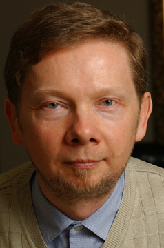

THE POWER OF NOW
REVIEW
It is important to focus on making the Now the main priority in your life. Even if the present moment is uncomfortable or difficult, accepting rather than trying to fight it or go against it will bring great rewards. When we do not access the power of the Now, every painful emotion we have leaves its mark on us and lives on, combining with other pain we’ve experienced throughout our lives. This pain becomes powerful negative energy that affects the body and mind - Tolle calls this a "pain body." When pain bodies become too strong, they can take over. When you're experiencing pain, there is a way to achieve consciousness and defeat it. First, recognize the pain; accept the fact that it exists without identifying with it or judging it. Become an observer of what's happening inside you and it will lose its power over you.
Fear occurs when we are in the present, but our minds are in the future thinking about what could happen. It is impossible to deal with something that has not happened yet, so anxiety often occurs. People who only identify with their minds and thoughts rather than their true deeper self will live with fear forever. The ego also creates a pain within us that stems from feeling like we're not whole... Some feel this consciously, while others feel it unconsciously. Many spend their whole lives trying to fill the void with material things. Once they gain the things they thought would make them happy, they crave more or different things because they are being controlled by their egos.
QUOTES
“It seems that most people need to experience a great deal of suffering before they will relinquish resistance and accept - before they will forgive.”
“The mind is a superb instrument if used rightly. Used wrongly, however, it becomes very destructive. To put it more accurately, it is not so much that you use your mind wrongly - you usually don’t use it at all. It uses you.”
- Eckhart Tolle
Author
Former Cambridge students and acquaintances began to ask Tolle about his beliefs. He started working as a counselor and spiritual teacher.[7] Students continued to come to him over the next five years. He moved to Glastonbury, a center of alternative living.[5] In 1995 he moved to Vancouver.[10] The Power of Now, Tolle's first book, was published in 1997 by Namaste Publishing.[8] The book was republished on a large scale by New World Library in 1999.[7] In 2000, Oprah Winfrey recommended it in her magazine